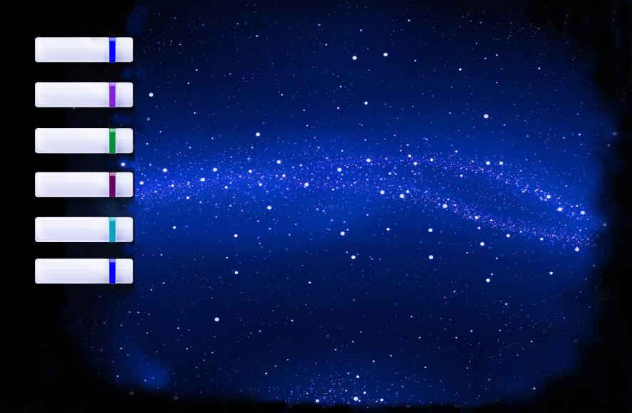

Здесь представлены аппликации Анастасии Цирлиной. В настоящее
время этот вид оформления все больше и больше вытесняется полноцветной печатью, но
он сохраняет своё значение, как самостоятельный вид творчества, несущий в себе и
наивный юмор фильмов Диснея, и прелесть русского барокко, и торжественную красоту
готических витражей.
Заметим, что никакая полноцветная печать не даёт ни четкости
линий ни яркости красок аппликации.